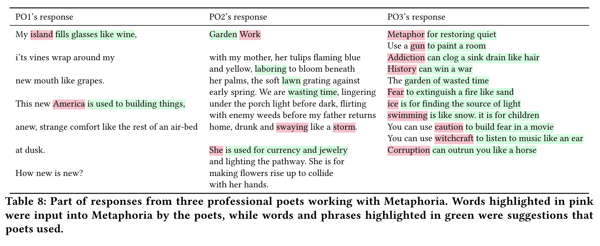

Katy Ilonka Gero and Lydia B. Chilton. 2019.
Metaphoria: An Algorithmic Companion for Metaphor Creation.
In CHI Conference on Human Factors in Computing Systems Proceedings
(CHI 2019).
(to appear)
Coming!
Katy Ilonka Gero
katy@cs.columbia.edu
This is a high-level overview of the design and evaluation of Metaphoria. More details can be found in the paper.
Click here to use Metaphoria yourself!
Metaphoria is an online tool that generates multiple metaphorical connections between two words. It's designed to give you ideas for poetry, essays, or stories. It's a tool that augments your abilities, rather than replacing them.
While computation has opened a floodgate of creative tools for music and the visual arts, like synthesizers, Photoshop, domain-specific programming languages like Processing, SnapChat filters, and generative algorithms like GANs, little of that fervor has transferred to the medium of text. Word processors that detect spelling and grammatical errors are useful, but do not support the creative elements of writing.
In this work, we build a metaphor generation tool for providing ideas of how to describe abstract concepts like 'love' or 'consciousness'. Metaphors famously convey abstract ideas by comparing them to more concrete or familiar concepts, and are used in all forms of writing from poetry to journalism.
People have built tools for writing before. Dictionaries and thesauri are kinds of writing tools, as are spell- and grammar-checkers. More recently people have built scaffolding tools, that help you plan or structure a specific kind of writing, like writing an email to ask for help, or writing an essay.
Fewer people have built tools for creative writing. People have made tools that will give you the next sentence in your story, but these sentences tend to be a bit a random. This is not necessarily a bad thing, sometimes it can help you get out of your head or spark a new idea, but in this work we wanted to look at creative writing tools that produce suggestions that make sense given what you are trying to write.
Other people have built tools that generate a whole poem based on input from a user. These are cool too, but they don't fit into the normal practice of writing. In this work, we build tools that "traditional" writers could use in their practice.
We have two main goals:
1. Generate suggestions that make sense to the writer, given what the writer is looking to do.
(We call this coherence to context.)
2. Generate suggestions that inspire writers to come up with new and different ideas.
(We call this divergent outcomes.)
To generate the metaphorical connections, we use an open-source knowledge graph called ConceptNet and something called word embeddings.
We start with a "seed metaphor", which is a metaphor of the form A is B, where A is the source and B is the vehicle. For example, envy is a bell. We're going to generate potential ways that envy is connected to bell.
We first generate a large set of features of bell using ConceptNet, an open-source knowledge graph. Some features of bell you can find in ConceptNet are that bells make noise and that bells have clappers.
We then rank these features by how related they are to envy. For examples, making noise is more related to envy than having clappers. This ranking is done using word embeddings, in which every word is placed in a high-dimensional space (i.e. is represented by a vector) and similar words are located near each other. We use the Word Mover's Distance algorithm to measure how close a feature (like making noise) is to the source (envy). We can then rank each feature by their distance to the source.
Then we select the top 10 features, throwing out any features that are too similar to each other.
There are a few more details about how the suggestions are presented, including re-ranking the top 10 by their valence, and adding the ability to 'expand' the suggestions. These details can be found in the paper.
To evaluate Metaphoria, we compared its output to two other metaphor generation algorithms. We also had undergraduates and professional poets use Metaphoria. We found that Metaphoria produces connections that are as good or better than other algorithms. In usage, we found that Metaphoria almost always produces some connections that make sense, though it's pretty dependent on the writer as to which connections make sense. We also found that Metaphoria rarely resulted in people writing very similar things--instead, Metaphoria inspires people to write things they might never have thought of.
